ANVISA - Módulo 4: Procedimentos Laboratoriais: da Requisição do Exame à Análise Microbiológica e Laudo Final
CAPÍTULO 3 - Microscopia e Coloração
SEM COLORAÇÃO
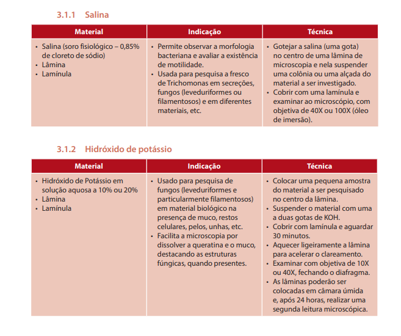
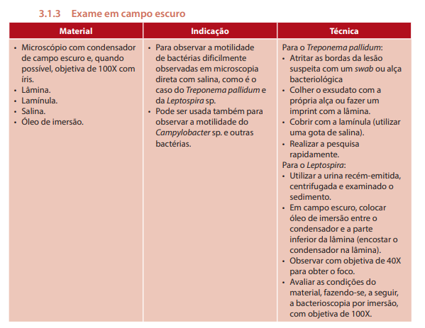
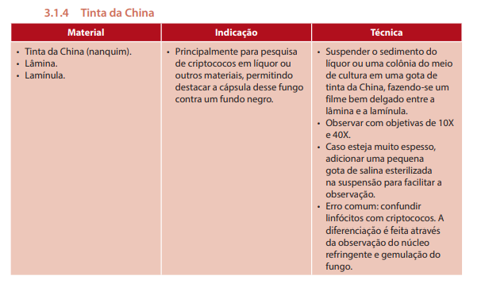
COLORAÇÃO DE GRAM
- características:
- cor
- tamanho
- forma
- agrupamento
- recurso rápido
- amostras jovens < 24h
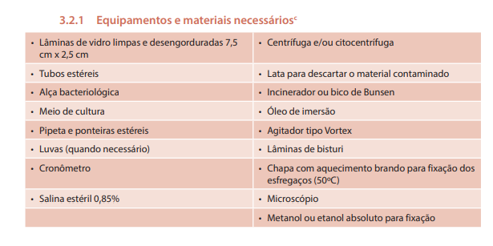
- esfregaço:
- espessura densa
- esparso
- laminas limpas, novas e que estavam em alcool
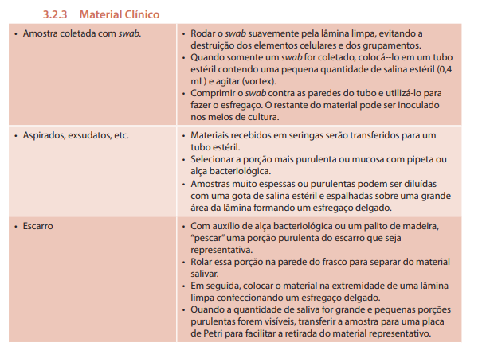 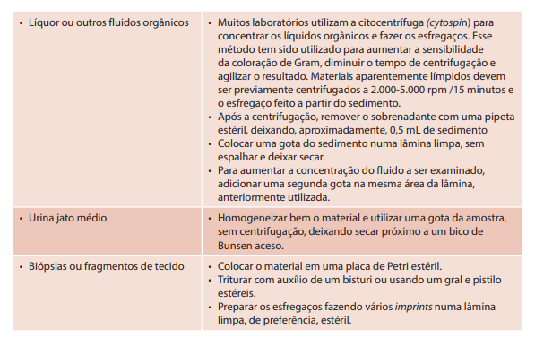
- swab: no centro da lâmina
- nos meios de cultura do mais rico pro mais seletivo
-
fixar rapidamente em chama
-
cultura em caldo: uma gota no centro da lamina
- espalhar suavemente
- meio sólido: gota salina estéril e uma pequena porção da cultura após
- misturar suavemente
-
fixação:
-
calor: brando 50° exposto ao ar - lamina fria para colorir
-
metanol/etanol: 2 gotas após esfregaço seco - não aquecer ou lavar
-
corantes:
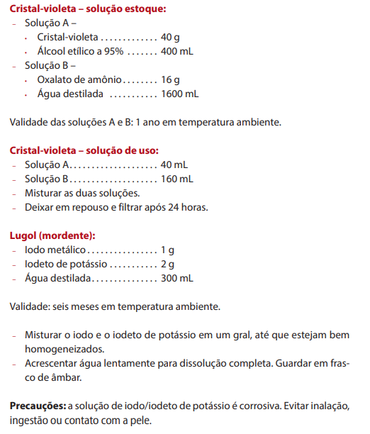 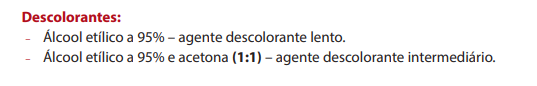 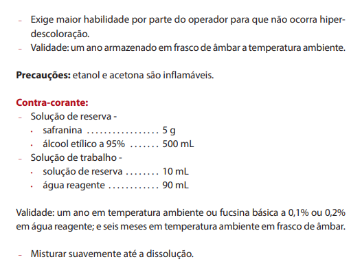
- passo a passo:
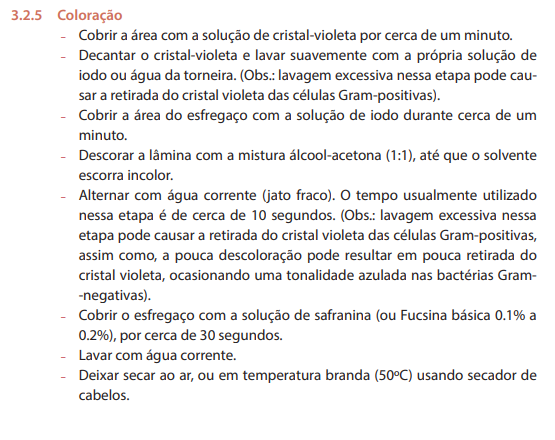
- leitura:
- em 10x: avaliação do esfregaço como um todo
- qualidade, uniformidade e espessura
- presença de células normais
- presença de bactérias tipicas da microbiota
- presença, localização e agrupamento microbiano
- presença de filamentos, pseudo-hifas e leveduras
- em 100x (objetiva de imersão)
 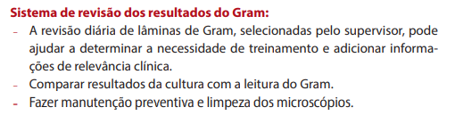
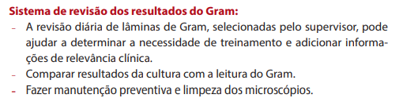
OUTRAS COLORAÇÕES
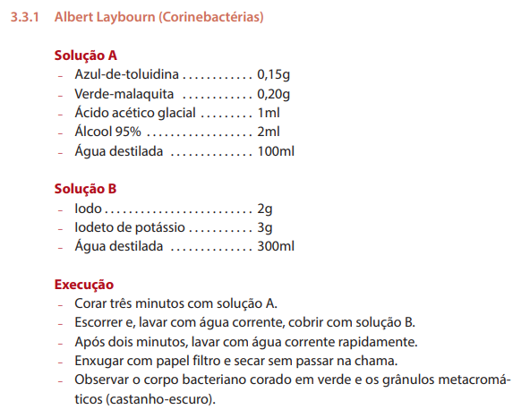
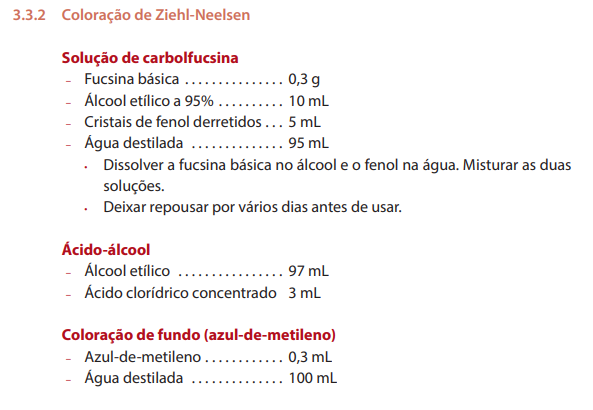
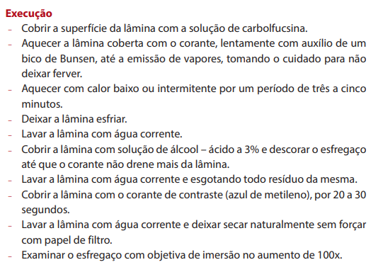
CAPÍTULO 4 - SEMEADURA EM MEIOS DE CULTURA
ESSE CAPÍTULO TEM VÁRIOS PASSO A PASSO PARA CADA MATERIAL E CADA TIPO DE COLETA/CULTURA.
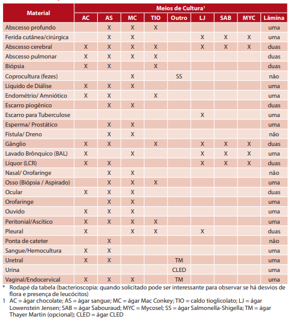
CARACTERÍSTICAS MACROSCÓPICAS DAS COLÔNIAS
TAMANHO:
- considerar a placa como um todo
- puntiforme < 1mm - muito pequenas, bactérias exigentes
- pequenas até 2mm
- Agar MacConkey - Shigella e Yersinia
- Agar salmonela-shigella - Shigella e Yersinia
- Stenotrophomonas maltophilia, Acinetobacter spp., Enterococcus spp., pneumococos, Streptococcus spp. Cândida spp.
- alguns esfafilococos coagulase negativo
- média até 3mm - Enterobactérias e estafilococos
- grandes mais de 4mm -
- Bacillus spp.
- Klebsiella e Enterobacter
- Pseudomonas aeruginosa
COR:
- depende do meio de cultura usado
- meios não diferenciais:
- S. aureus – amarelo
- Micrococcus – amarelo
- Serratia marcescens ou rubidae – avermelhado
- Roseomonas – róseo
- Pseudomonas – diferentes tons de verde e castanho
- Enterococcus casseliflavus – amarelo
- meios diferenciais - a coloração da colônia sofre interferência das reações que ocorrem com substratos dos meios de cultura: - Utilização da lactose no MacConkey – vermelho - Utilização da lactose no CLED – amarelo - Utilização do manitol em Ágar manitol salgado – amarelo - Produção de H2S no TSI, Hecktoen Enteric e Salmonella-Shigella – negro
HEMÓLISE
- Baseada na lise de hemácias contidas no Ágar Sangue (5%)
- lise total: beta-hemolise: a formação de halo de transparência ao redor e/ou sob a colônia
- S. pyogenes, S. agalactiae, Listeria, S. aureus, S. haemolyticcus, Enterococcus.
- lise parcial: alfa hemólise: halo esverdeado
- S. viridans, S. pneumoniae, Enterococcus
- sem lise: gama hemólise: Enterococcus, Estafilococos coagulase negativo

AVALIAÇÃO DO CRESCIMENTO E CONTAGEM
- homogeneidade da colônia
- marcar a contagem com uma caneta o verso para evitar dupla contagem
- contagem por estimativa: dividir a plana em 4 ou 8 espaços
- esoclher uma das partes
- contar o numero de UFC nela
- multiplicar pelo total de partes
- converter o número de UFC contadas em UFC/mL ou UFC/g
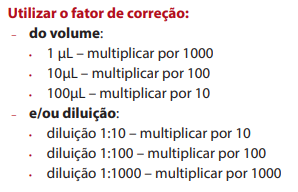
CAPÍTULO 5 - IDENTIFICAÇÃO
Meios de cultura:
- Agar sangue - rico e não seletivo; gram neg e pos; fungos
- Agar chocolate - rico e não seletivo; bactérias aeróbias
- Agar MacConkey - seltivo gram neg; diferencial p/ lactose
- Agar salmonela-shigella - seletiva pra essas duas bacs; diferencial para lactose
- Agar Hecktoen Enteric - seletivo para salmonela e shigella; diferencial para lactose
- Ágar Thayer Martin Modificado - seletivo para adição de colistina, vancomicina e nistatina; inibe enterobac, gram pos, fungos